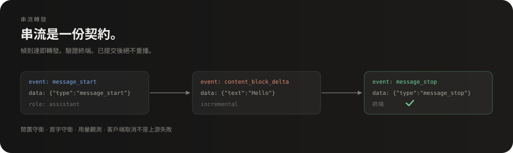
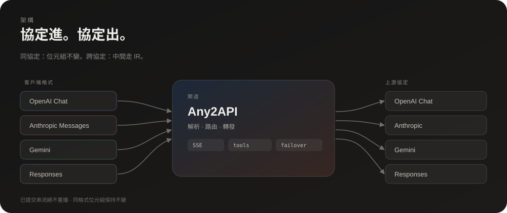
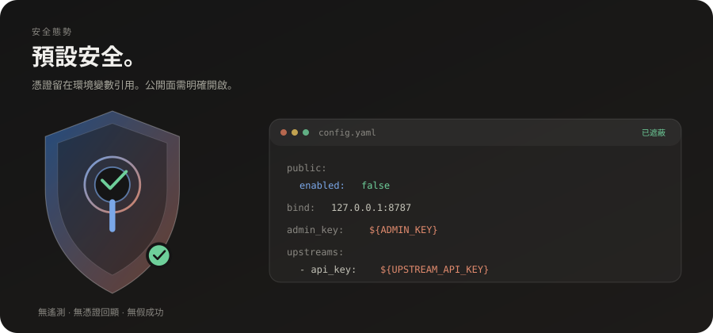

串流有契約
SSE 轉發、終端幀驗證、首字與閒置守衛；取消與上游失敗分開記錄。
轉換 OpenAI Chat、Anthropic Messages、Gemini 與 Responses——串流穩定、工具呼叫跨格式、容錯切換知道何時該停。
每種協定都有自己的形狀。Any2API 保留有用的部分，丟掉意外的部分。
SSE 轉發、終端幀驗證、首字與閒置守衛；取消與上游失敗分開記錄。
工具呼叫、參數與名稱跨轉換保留；上游正規化、客戶端還原。
有序上游鏈、冷卻、retry-after 與例外預算；已提交串流絕不重播。
Responses 的 background: true 成為托管任務：建立、輪詢、取消、續流，不必一直佔住連線。
健康、模型探索、請求環、指標、審計與用量；未設 admin key 時管理路由關閉。
無遙測、倉庫無憑證；公開面預設關閉；管理面留在 loopback。

入口格式解析成小型中間表示；上游渲染器寫出需要的協定；回應再走回來——協定相同時保持位元組不變。
Chat、Messages、Gemini 或 Responses，包含串流與工具。
模型白名單、健康、冷卻與任務面規則決定哪個上游嘗試。
跨協定走 IR；同協定保留位元組。
串流幀、終端驗證、嘗試記錄；已提交串流絕不重播。
POST /v1/chat/completions
{
"model": "example-model",
"messages": [{"role": "user", "content": "Hello"}],
"stream": true
}
建置 Go 二進位、指向一個上游，並讓服務留在 loopback。
git clone https://github.com/dwgx/any2api.git
cd any2api/src
go build -o any2api ./cmd/any2api
cp config.example.yaml ../config.yaml
../any2api -config ../config.yaml127.0.0.1:8787upstreams:
- name: primary
protocol: openai_chat
base_url: https://api.example.com/v1
api_key: ${UPSTREAM_API_KEY}
models:
- id: example-model
upstream_model: upstream-model-name
upstreams: ["primary"]${ENV} 引用或未跟蹤的 config.yaml。127.0.0.1；TLS 在審查過的反向代理終止。